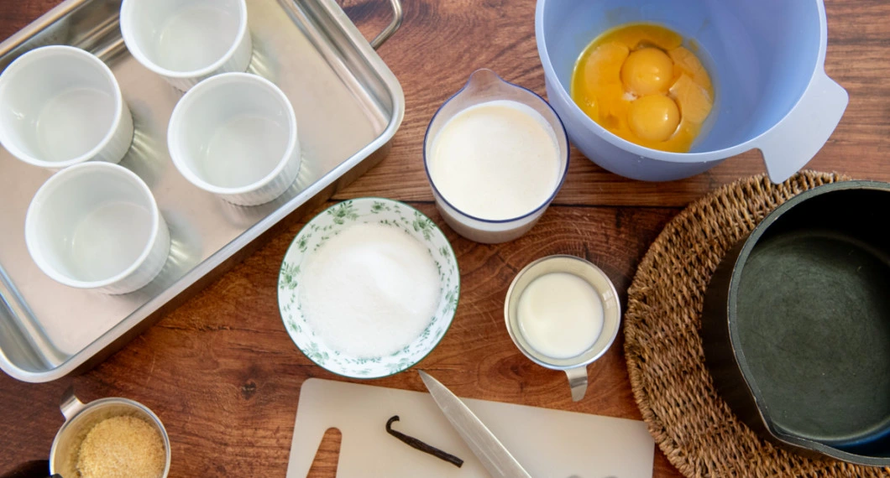
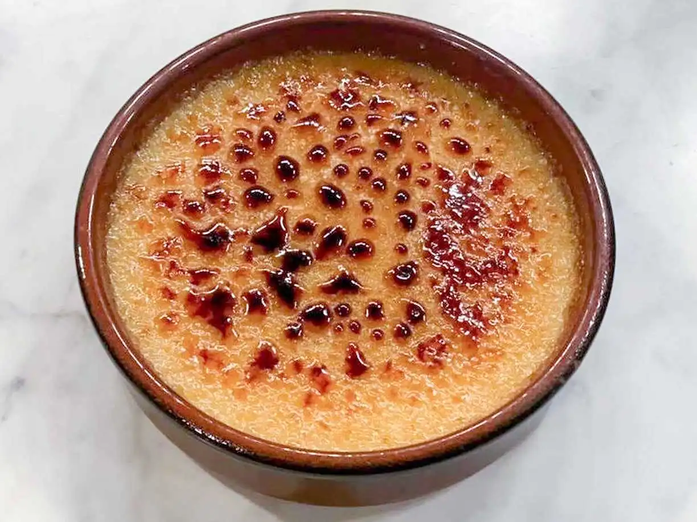

Ingredienser
- 1 Vaniljstång
- 5 dl vispgrädde
- 1 1/2 dl mjölk
- 7 äggulor
- 1 1/2 dl strösocker
- 5 msk råsocker

Recept
För att vara en så god och utmärk för efterrätt är creme brule en så enkel men ändå elegant efterrätt, den är söt och krämig med reltaivt få ingredienser.
- Sätt ugnen på 150 grader
- Dela vaniljstången på längden och skrapa ut fröna.
- Koka upp vaniljfrön, vaniljstång, grädde och mjölk i en kastrull. Ta från värmen och låt dra i 10 minuter. Ta bort vaniljstången.
- Värm vatten till vattenbadet.
- Rör ihop äggulor med socker. Blanda med gräddmjölken.
- Fördela smeten i ugnssäkra portionsformar. Ställ formarna i en ugnsform och häll varmvatten så att det räcker upp till halva brûléeformarna.
- Ställ formen i mitten av ugnen och grädda i vattenbad tills de blivit fasta i konsistensen, ca 45 minuter. Testa genom att skaka lite på en form och se om puddingen rör sig. Låt svalna och ställ gärna i kylen i 2 timmar.
- Vid servering: Strö råsocker över brûléerna och bränn av med en brännare. Alternativt sätt ugnen på 250°C, grill. Strö över råsocker och ställ in brûléerna i översta delen av ugnen tills sockret har smält och fått fin färg, men passa noga så att det inte bränns.
Tips: Man kan efter steg 7 låta den stå i kylen i 1-2 dagar!
